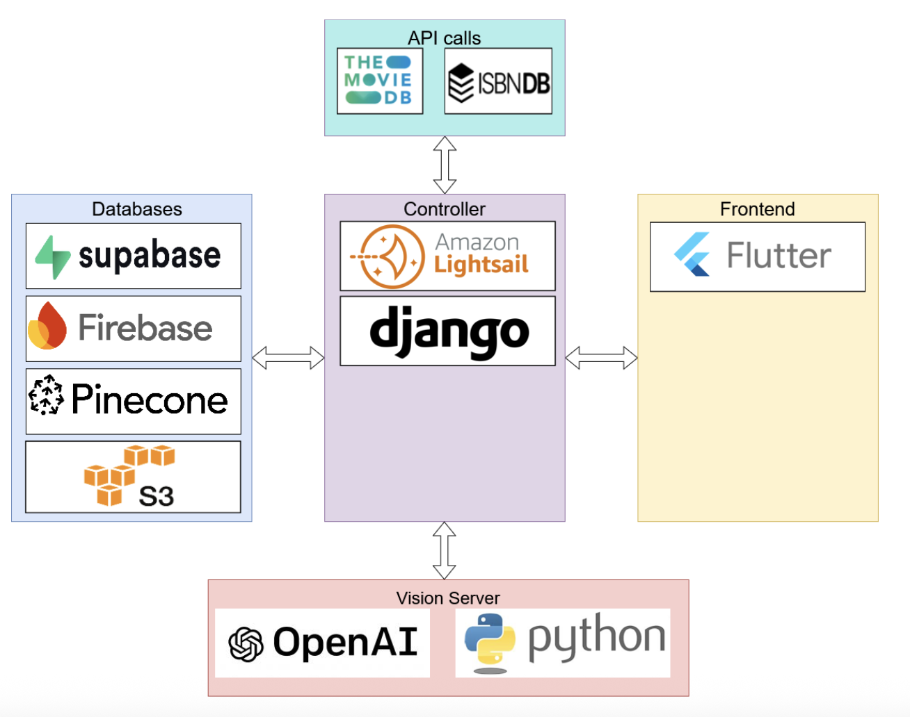

PopMedia is a multimedia rating and recommendation application designed for users who engage with various forms of media - including books, movies, and television. While platforms like Goodreads and Letterboxd offer media specific experiences, PopMedia creates an all-in-one user-friendly application, making it easier than ever to review, share, and discover content.
Our application's main features will include user profiles, media ratings and reviews, a smart recommendation engine that draws from a user’s entire media profile, and social components such as playlists, trending tabs, and yearly overviews. This allows users not only to manage their media consumption in one place but also to find and engage in a community of diverse tastes.
PopMedia stands out as a capstone project due to its wide range of features, data-driven personalization, and emphasis on refined user experience. It will allow our team to explore various technical implementations, including a recommendation system, interactive and clean UI/UX, and extensive data collection to create a cohesive and practical product.
